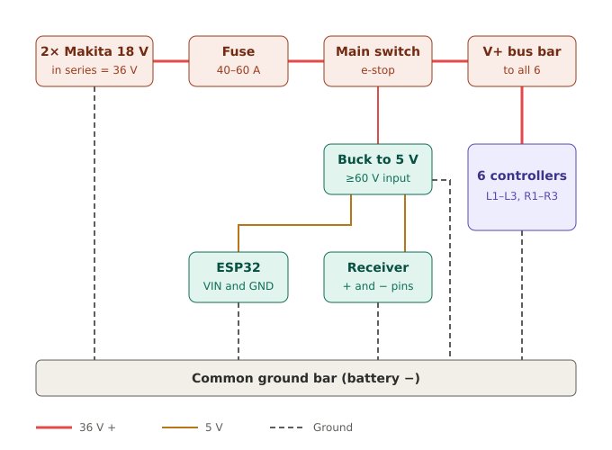
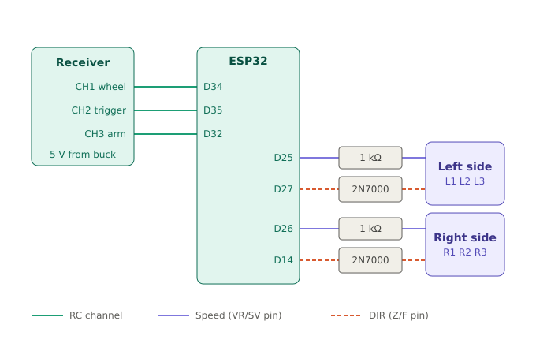
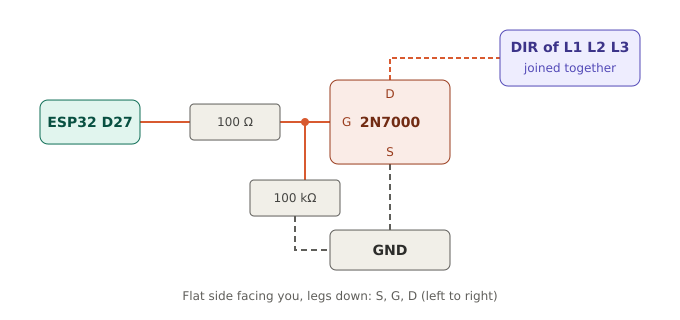

| Part | Qty | Note | |
|---|---|---|---|
| ☐ | ESP32-WROOM-32 DevKit, 30-pin, USB-C + expansion board | 1 | Chassis brain |
| ☐ | HOTRC DS-600 + F-06A receiver | 1 | Bound to transmitter |
| ☐ | 5 V buck converter, ≥60 V input (e.g. XL7015) | 1 | Set to 5.0 V before connecting |
| ☐ | 2N7000 MOSFET | 2 | DIR switches |
| ☐ | Resistors: 1 kΩ / 100 Ω / 100 kΩ | 2 each | Small perfboard |
| ☐ | 2× Makita 18 V 5 Ah + 2 battery adapter docks | 2 | In series = 36 V |
| ☐ | Resistors 100 kΩ + 6.8 kΩ, capacitor 100 nF | 2 each | Battery voltage sensing |
| ☐ | Fuse 40 A + holder | 1 | In battery + line |
| ☐ | Main switch / emergency stop | 1 | Always reachable |
| ☐ | 10 kΩ potentiometer | 1 | Bench test (step 1) |
| ☐ | Multimeter, stands for the chassis | – | Wheels off the ground |

| From | To | Wire |
|---|---|---|
| 2× Makita | A1 + → bus · A1 − → B1 + · B1 − → ground bar | Series = 36 V (42 V full) |
| Battery + | Fuse 40 A → main switch → V+ bus bar → V+ of all 6 controllers | ≥12 AWG main, ≥14 AWG per controller |
| + bus / middle | 100 kΩ → ESP32 D36 / D39 → 6.8 kΩ → GND (+100 nF) | Battery protection |
| Battery − | Ground bar → V− of all 6 controllers | Same gauge as + |
| After main switch | Buck converter input | Thin wire OK |
| Buck 5 V / GND | ESP32 VIN / GND and receiver + / − | Dupont / screw terminal |
| Controller signal GND (each) | Ground bar | Required |

| ESP32 pin | Connects to | Function |
|---|---|---|
| D34 | Receiver CH1 signal | Steering wheel |
| D35 | Receiver CH2 signal | Throttle trigger |
| D32 | Receiver CH3 signal | ARM switch |
| D33 | Receiver CH4 signal | Turtle / rabbit |
| D25 | 1 kΩ → SPEED (VR/SV) of L1, L2, L3 | Left speed (DAC) |
| D27 | DIR switch → DIR (Z/F) of L1, L2, L3 | Left direction |
| D26 | 1 kΩ → SPEED of R1, R2, R3 | Right speed (DAC) |
| D14 | DIR switch → DIR of R1, R2, R3 | Right direction |
| D36 / D39 | Battery dividers (total / middle) | Low-voltage protection |
| VIN / GND | Buck 5 V / ground bar | Power |
All 10 signal pins (VP, VN, D34–D14) are on the same header row of the 30-pin board. Brake pin: leave unconnected. EN/STOP pin (if present): wire as labelled on the controller, often to GND to run.

| Step | Pass when | |
|---|---|---|
| ☐ | 1. Bench test one controller. One motor, wheel in the air. 10 kΩ pot: ends to controller 5 V and GND, wiper to SPEED. | Motor spins smoothly. Note the start voltage → V_START. DIR to GND reverses it. |
| ☐ | 2. Receiver + ESP32 on USB only. Flash firmware/chassis_esp32, open Serial Monitor at 115200. | CH1–CH4 read ≈1000–2000. Find the CH3 (ARM) and CH4 (turtle/rabbit) switches. |
| ☐ | 3. Left side on stands. Turtle mode. Flip ARM with trigger centred, pull gently. | Left wheels turn smoothly. |
| ☐ | 4. Fix direction. Use INVERT_L / INVERT_R. | Trigger forward = wheels forward. |
| ☐ | 5. Add right side. | Wheel left = chassis turns left. |
| ☐ | 5b. Smoothness check. Full trigger and release, in turtle and in rabbit. Tune ACCEL_KMH_S / DECEL_KMH_S / JERK_KMH_S2. | No jerk at start, stop or mode change. |
| ☐ | 6. Failsafe test. Transmitter off while wheels spin. | Smooth stop within ~2.5 s; the e-stop cuts power instantly. |
| ☐ | 7. On the ground: empty first, then with a load. | Controlled driving. |
Source: github.com/vikgr/eksi6 · docs/01-first-test-wiring.md